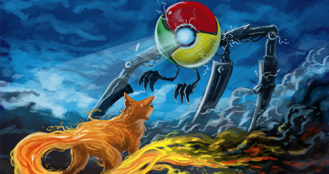
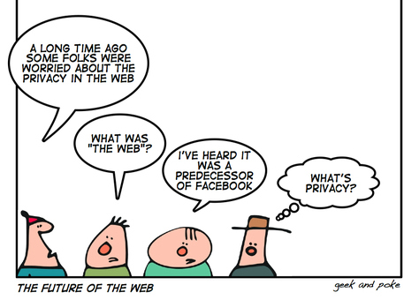
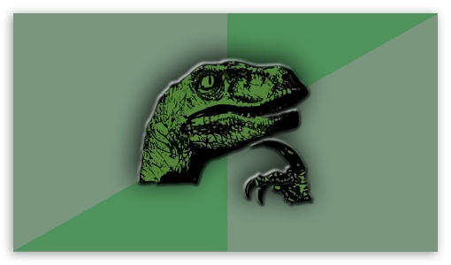
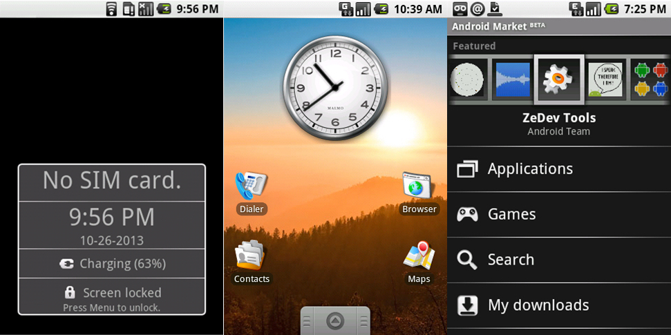
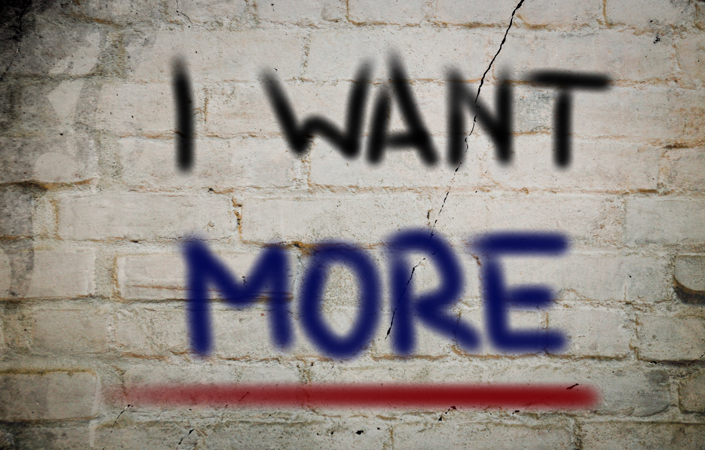
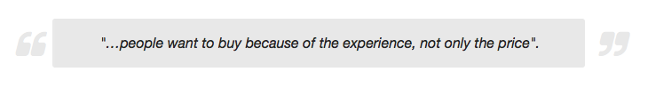
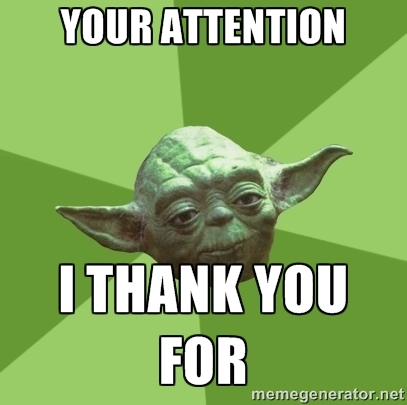

Present and future of FirefoxOS



- The Internet is a global public resource that must remain open and accessible.
- The Internet should enrich the lives of individual human beings.
- Individuals' security on the Internet is fundamental and cannot be treated as optional.
- Individuals must have the ability to shape their own experiences on the Internet.


Differences between apps and webs
- They work offline
- Transitions
- More integrated with the phone
- "Prettier"
- Access content without typing URL's

- Phone interaction changed
- Good web apps
- Plattform allowing to do it

Everything in the OS is open web technology and standard proposals

Upgrading the mobile world

- Targeted at new, emerging markets
- Very affordable hardware
- Cost control aware
- Web technologies through and through
- Standarizing APIs
- Vibration API
- Screen Orientation
- Geolocation API
- Mouse Lock API
- Open WebApps
- Network Information API
- Battery Status API
- Alarm API
- Push Notifications API
- WebFM API / FMRadio
- WebPayment
- IndexedDB
- Ambient light sensor
- Proximity sensor
- Notification
Using WebAPIs to make the web layer more capable



- Privacy
- Customization
- Bring the web to the mobile world
Let's merge web and apps world
- Service Workers --> Work Offline
- Pre-rendering --> Faster with transitions
- WebComponents --> Prettier and more integrated
- Security: Tracking Protection
- Customization: Addons
- Bring the web to the mobile world: Pinning the web


- Alberto Pastor
- System Frontend FirefoxOS Engineer
- @pastoret